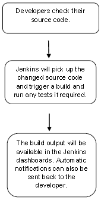

Jenkins
Jenkins is a software that allows continuous integration. Jenkins will be installed on a server where the central build will take place. The following flowchart demonstrates a very simple workflow of how Jenkins works.
Continuous Integration is a development practice that requires developers to integrate code into a shared repository at regular intervals. This concept was meant to remove the problem of finding later occurrence of issues in the build lifecycle. Continuous integration requires the developers to have frequent builds. The common practice is that whenever a code commit occurs, a build should be triggered.
System Requirements
| JDK | JDK 1.5 or above |
| Memory | 2 GB RAM (recommended) |
| Disk Space | No minimum requirement. Note that since all builds will be stored on the Jenkins machines, it has to be ensured that sufficient disk space is available for build storage. |
| Operating System Version | Jenkins can be installed on Windows, Ubuntu/Debian, Red Hat/Fedora/CentOS, Mac OS X, openSUSE, FReeBSD, OpenBSD, Gentoo. |
| Java Container | The WAR file can be run in any container that supports Servlet 2.4/JSP 2.0 or later.(An example is Tomcat 5). |
The official website for Jenkins is Jenkins. If you click the given link, you can get the home page of the Jenkins official website
Starting Jenkins
Open the command prompt. From the command prompt, browse to the directory where the jenkins.war file is present. Run the following command
D:\>Java –jar Jenkins.war
After the command is run, various tasks will run, one of which is the extraction of the war file which is done by an embedded webserver called winstone.
Java –jar Jenkins.war
INFO: Beginning extraction from war file
Once the processing is complete without major errors, the following line will come in the output of the command prompt.
INFO: Jenkins is fully up and running
Accessing Jenkins
Once Jenkins is up and running, one can access Jenkins from the link − http://localhost:8080
This link will bring up the Jenkins dashboard.